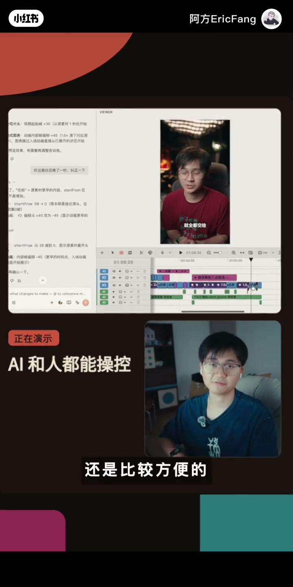
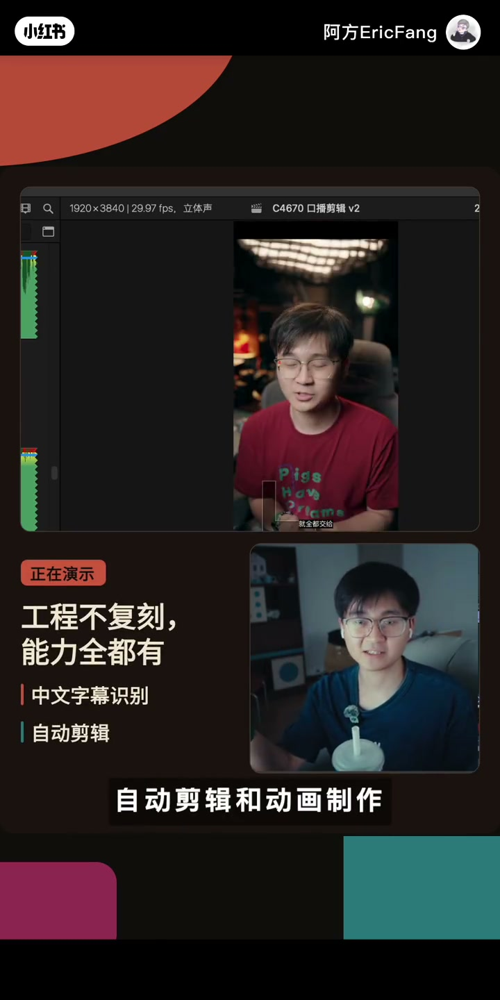

内容要点
UP 主阿方分享了一套终于能在 Final Cut Pro 上跑的 AI 自动剪辑工作流：把口播粗剪、B-roll 匹配、上字幕这些脏活交给 Chad Cut，再由一个自制的 skill 把工程导入 Final Cut 二次创作。他先复盘了 Chad Cut 半年使用中的三个痛点（工程无法导入 FCP、中文口播剪辑不自然、不对 Agent 开放），再演示通过 Codex 或 Claude Code 一句话配置、在对话里 Add Chad Cut 即可开始剪辑的完整流程，最后给出他的核心经验——建立一个剪辑习惯文档，让 AI 每次执行后复盘，它会越来越懂你的风格。
知识结构
开头口播粗剪一刀未动即成片；半年摸索后，Chad Cut 的动画生成早已自由，但 AI 剪辑一直没省时间。
给 Chad Cut 提的三个意见：工程无法导入 Final Cut、中文口播剪辑不自然、不对 Codex 等 Agent 开放；一次更新+一个自制 skill 全解决。
对 Codex（ChatGPT 桌面端）或 Claude Code 说一句话完成配置，新对话里 Add Chad Cut，丢素材提要求即可剪辑。
做得最好的是口播剪辑与动画生成；但字幕识别错误、缩放效果不自然、素材不合意仍需人工修正，网页端界面改起来方便。
把粗稿转回更熟悉的 Final Cut Pro 完成高质量剪辑；skill 免费分享，Final Cut 稀缺的中文字幕识别、自动剪辑、动画制作全都有了。
从现在开始建一个剪辑习惯文档，让 AI 每次执行项目后复盘一遍——它会剪得越来越懂你（比如气口剪紧凑、喜欢的动画风格）。
Chad Cut + Agent（Codex/Claude Code）+ 自制 skill 构成一条完整的 FCP AI 剪辑链：Agent 负责配置与指挥，Chad Cut 做粗剪与动画，skill 打通工程导入 Final Cut。AI 剪辑仍需人工纠错，但脏活已省下；真正让它「越来越懂你」的机制，是剪辑习惯文档+每次项目后复盘。
00:00-00:24开场：一刀未动的自动剪辑成片
视频用一个成果直接开场——开头的口播片段「我一刀都没有动」，全靠 AI 完成。UP 主阿方点明动机：「一个足够聪明的自动剪辑工作流终于被我打通了，而且可以用在一直没那么聪明的 Final Cut Pro 上，咱终于不用再羡慕剪映和达芬奇了。」
他坦白过去的经历：过去半年一直在用 Chad Cut 这个 AI 剪辑软件，但「几乎只用来制作你现在看到的动画效果」，在真正的 AI 剪辑上没省下任何时间。
00:25-01:03三个意见：为什么过去省不下时间
阿方梳理了给 Chad Cut 工程师提的三个意见：「第一，剪辑好的项目没法导入到 Final Cut Pro 进行二次创作；第二，中文口播的自动剪辑很不自然；第三，没有开放给 Codex、Claude 这样的 Agent 去调。」
转折来了：「没想到他们最近的一次更新，通过解决第三点，解决了第二点；再加上我写了一个 skill，也解决了第一点。」现在的分工是：口播粗剪、B-roll 匹配、上字幕这样的脏活全交给 Chad Cut 自己办。
01:03-01:52配置与使用：一句话让 Agent 接管剪辑
演示非常简短：「第一步，对你的 Codex（就是现在的 ChatGPT 桌面端）说一句这样的话，然后留给它跑一段时间，它会帮你配置好 Chad Cut 粗剪。」用 Claude Code 也可以——「Chad Cut 现在也配了 Claude Code，我个人觉得它会比 ChatGPT 剪得更懂我一丢丢。」
配置完之后，「在一段新的对话里 Add Chad Cut，把你的素材丢进去，对它提出要求，它就可以帮你剪辑了。」阿方把自己的提示词贴在画面上，供观众截图保存。
01:52-02:31效果边界：做得最好的是口播，仍需人工修正
阿方评价：「它现在做的最好的地方，反而就是口播的剪辑，当然还有它一贯擅长的动画生成。」但为了播放量考虑，还是要做一些小的纠正和调整——比如字幕识别错误、放大缩小效果不够自然、插入的素材不是想要的。
好在 Chad Cut 上修改方便：「它的本质是一个 AI 和人能够共同操控的网页端剪辑软件，界面和你熟悉的剪辑软件相似，不太需要花时间学习。」

02:31-03:47二次创作与核心经验：剪辑习惯文档
阿方说明自己的完整路径：「我肯定还是会选择把它完成的粗稿转回我更熟悉、更自由的 Final Cut Pro，完成更高质量的剪辑。」skill 是免费分享的，它不会完美复刻 Chad Cut 的工程文件结果，但「像 Final Cut 最稀缺的中文字幕识别、自动剪辑和动画制作，现在你都拥有了。」
收尾给出最宝贵的经验：「从现在开始，去建一个自己的剪辑习惯文档，让你的 AI 每次执行完项目之后复盘一遍，它会剪得越来越懂你。比如它现在就知道我喜欢把气口剪得更紧凑一些、喜欢什么风格的动画，我现在做字幕识别，再也不需要把『R方』纠正成『R方』了。」

完整转录（90段）
以下文本由 Whisper medium 模型自动转录，可能存在少量识别误差，已尽可能修正。
一个足够聪明的自动剪辑工作又终于被我得通了
而且可以用在一直没那么聪明的Final Cut Pro上
咱终于不用再羡慕剪音和达芬奇了
而且它可以剪得更自然更懂你
比如刚刚你看到的开头我一刀都没有动
OK 事情是这样的
在过去的半年
我一直在用一个叫做Chad Cut的AI剪辑软件
但几乎只用来制作你现在看到的动画效果
摸索了一年
阿芳可以说是已经获得了动画自由
但回到AI剪辑这件事情上
她没有给我省下任何的时间
我给Chad Cut的工程师提了三个意见
剪辑好的项目没法导入到Final Cut Pro进行二次创作
中文口播的自动剪辑很不自然
而且没有开放给Codex小龙虾这样的Agent去调
没想到他们最近的一次更新通过解决第三点
解决了第二点
再加上阿芳写了一个skill
也解决了第一点
现在比如这期视频的口播的粗剪
B-roll的匹配或者是上字幕这样的脏活
就全都交给Chad Cut自己去办了
我来演示一下 非常的简单
好的 第一步对你的Codex
就是现在所谓的Chad GPT桌面端
说一句这样的话
然后留给它跑一段时间
它之后帮你配置好Chad Cut查剪
如果你用的是Cloud Code
那也没有关系
对它说这样的一句话
Chad Cut现在也是配了Cloud Code
而且我个人认为
会比Chad GPT剪得更懂我一丢丢
那不管你用的是哪个
你配置完之后都可以在一段新的对话里面
Add Chad Cut
之后把你的素材丢进去
对它提出要求
它就可以帮你剪辑了
这些是我的提示词
大家可以自由的截图保存
我觉得它现在做的最好的地方
反而就是口播的剪辑
当然还有它一贯擅长的动画的生成
但是为了你的播放量考虑
你还是要做一些小的纠正和调整
它才成为一个可以发布的视频
比如字幕的识别错误
放大缩小的效果不够自然
或者它插入的素材
还并不是你想要的
幸好在Chad Cut上修改还是比较方便的
它的本质是一个AI和人都能够操控的网页端的剪辑软件
它和你熟悉的常用的那个剪辑软件
有着相似的界面
不太需要你花时间学习
但我肯定还是会选择把它完成的这个粗稿
转套
我更熟悉更自由的Final Cut Pro
完成更高质量的剪辑
故事讲到这里就没有什么技巧可以了
你只需要让你的AI agent去读一遍
我给大家的skill
它不会完美的复刻Chad Cut的那个工程文件的结果
但是像Final Cut最稀缺的中文字幕的识别
自动剪辑和动画制作
现在你都拥有了
skill是免费的分享
快给我点一个小赞
好了 关于Chad Cut
我会做一期长视频内容
和大家详细讲解
但是现在我会告诉大家
我最宝贵的一个经验就是从现在开始
去建一个自己的剪辑习惯文档
让你的AI
每次执行完项目之后复盘一遍
它会剪得越来越懂你
比如说它现在就知道
我喜欢把气口剪得更紧凑一些
我喜欢什么样风格的动画
我现在去做字幕识别
再也不需要把R方
纠正成R方了
好了 这期视频就到这里了
我们下期再见
拜拜